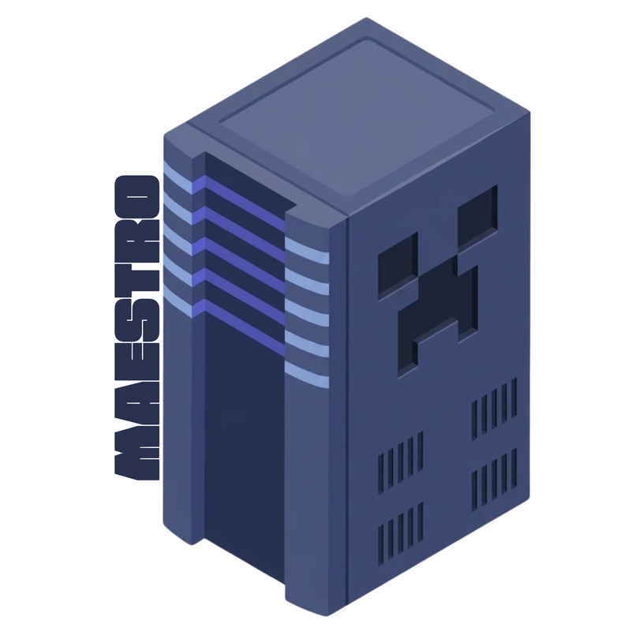
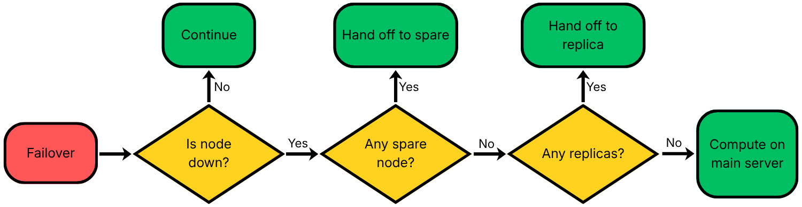
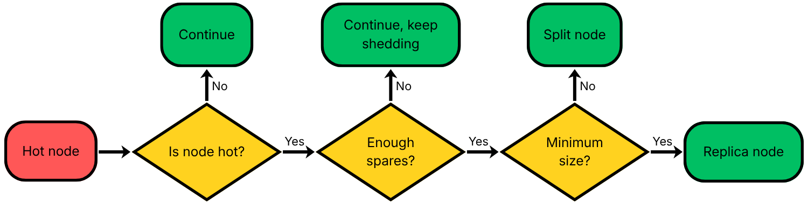
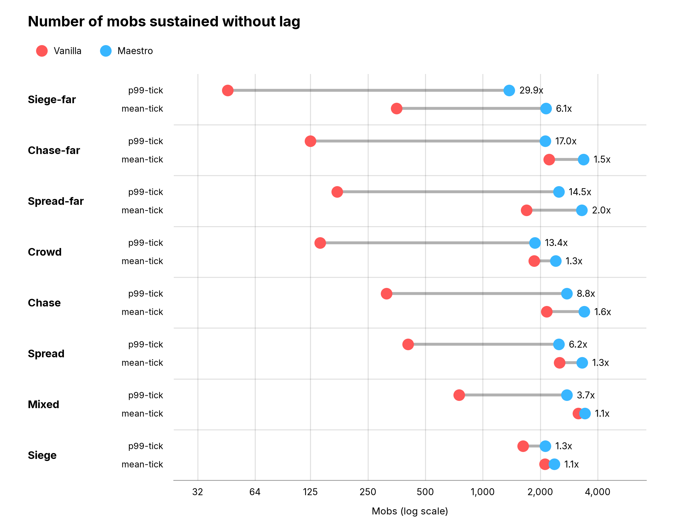
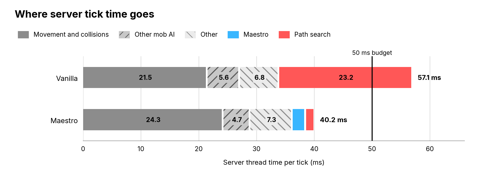

Maestro: distributed Minecraft pathfinding compute
Growing up, I loved to play Minecraft. Some of my fondest memories involve hosting servers for me and my friends on the family PC. If you've played on servers like these, you've probably come to dread the inevitable lag as the world grows, which can make the game nearly unplayable.
One major culprit of this lag is mob pathfinding. As players explore the world, they encounter hostile enemies, build animal farms, tame pets, and trade with villagers. As these mobs interact with the world, they need to calculate where and how to move next, a process that drains significant computational resources.
Maestro is a server-side Minecraft mod that efficiently parallelizes pathfinding by asynchronously offloading the computations to a fleet of compute nodes. Using Maestro, servers can handle up to 30 times more mobs without any additional lag.
Pathfinding primer
To understand vanilla Minecraft pathfinding, consider a simple example: a zombie moving to attack a stationary player. We'd like our path to start at the zombie's current position and end at the player's current position. For the game to feel immersive, we'd also like the path chosen to be as short as possible. But path length alone isn't sufficient. Say there's an incredibly short path between the zombie and the player, but it cuts right through a lake of dangerous lava! In that case, it'd be much better for the zombie to take a detour along a safer, albeit longer, path.
We can label each block in the world with a cost, such that less desirable blocks (e.g., lava) have a high cost. With these costs assigned, pathfinding becomes a standard graph traversal problem: finding the lowest-cost path between two vertices. To do this, Minecraft uses the A* algorithm. It adds up the block costs along the path so far, plus an estimate of the distance to the target, and explores the most promising block next.
But that's just to find the path for a single mob at a single point in time. In reality, a Minecraft server operates in time steps called ticks, which are typically 50 milliseconds. Most in-game events, including pathfinding, update every tick. So, every 50 ms, every single mob in the game must scan through the hundreds of blocks surrounding it, compute the cost of each block, and run A* to find the lowest-cost path. Oh, and Minecraft is a single-threaded game1! That means that a single server thread must not only run every pathfinding computation but also handle all player movement, block placement, physics updates, and more in just one tick (50 ms). In practice, I found that even medium-sized servers can spend around 40% of each tick just doing pathfinding. The lag now makes a lot more sense, and we can see a clear performance bottleneck forming.
Design goals
Before looking at the implementation, let's understand some of the core design goals:
- Performance: Maestro must be fast. If paths take too long to come back, the underlying world and mob state may have already changed, making the result stale. To quantify this, I set a service level objective (SLO) that the 99th-percentile request must be under 3 ticks (150 ms) end-to-end. In my testing, a 150-millisecond delay in a zombie changing directions is virtually imperceptible to the player.
- Good-enough paths: Maestro-computed paths should match vanilla as closely as possible. However, some deviation is acceptable for performance. Specifically, each pathfinding request is computed from a snapshot of the world, which may become stale over time as blocks are placed or removed. This is fine because Minecraft treats paths as suggestions: a mob will try to follow its path, but each step will ultimately be run against the physics engine on the live world. That means a stale path can only cause a brief detour, never an invalid game state.
- Availability: the server must still function correctly (i.e., mobs can still move) when nodes fail. Maestro must handle node failures gracefully by redirecting requests or falling back to the main server, preventing cascading failures. Maestro must also detect when nodes fail while limiting false positives. Nodes that fail and recover must be able to rejoin.
- Testability: distributed systems are notoriously bug-prone. Maestro must separate core logic from Minecraft gameplay, external I/O, and other nondeterminism for ease of testing.
- Learning: while you're reading this, you may find some of the approaches overkill for the problem. That's the point! My primary goal was to use this project as a hands-on way to learn what it takes to build a fault-tolerant distributed system. Many of the mechanisms I will describe should be viewed as proofs of concept rather than strict necessities.
To achieve these goals without overcomplicating the system, I made some trade-offs. Here is what Maestro doesn't do (non-goals):
- Maestro doesn't decrease the end-to-end latency of a single pathfinding computation. In fact, any approach that offloads computations will necessarily increase latency. Instead, Maestro's goal is to improve throughput: the server must be able to handle more mobs without slowing down or lagging.
- Maestro doesn't distribute the core server. All Minecraft updates will ultimately occur on the single main server process, and the main server isn't replicated in any way. While Maestro uses some background thread pools to handle serialization and network I/O, it doesn't alter the game's single-threaded core logic. Note that this doesn't introduce a new single point of failure: the server is already a single point of failure in the base game, and Maestro lives inside this server process.
- Maestro doesn't scale elastically. The set of compute nodes (physical machines) is fixed in a config file when the server starts. To add new nodes, the server must be restarted.
- Maestro doesn't offload any non-pathfinding work. Other game events, such as block updates, still run on the main thread.
High-level overview
A Maestro fleet has two parts: a central controller and a set of compute nodes. The Maestro mod intercepts the game's pathfinding calls and hands each one to the controller, which picks a compute node to serve it. At the end of each tick, the controller fires off requests to the compute nodes, which add them to a FIFO job queue. While waiting for the asynchronous response, mobs simply continue following their existing paths. Twice per tick, the controller collects the answers that have arrived and gives each path to its mob. If a mob goes unserved for too long, the controller falls back to computing the path itself.
The controller makes every decision: keeping track of the compute nodes, remembering outgoing requests, routing incoming responses, etc. The controller isn't a separate service; it runs inside the Minecraft server process on the main server thread. In contrast, the compute nodes are deliberately simple: they just contain a copy of the world state and run searches for incoming requests. Nodes have neither direct access to the game nor knowledge of other compute nodes.
![Architecture diagram. Inside the Minecraft server, the controller intercepts mob pathfinding
and world updates, returns paths to mobs, and passes jobs to serialization threads, which hand
them to networking threads. The networking threads connect to a compute node over three links: a
world stream (TCP) into its world store, a two-way control stream (TCP) with its node core, and
requests (UDP) into its request queue. Search worker threads take jobs from the queue and send
responses (UDP) back to the server.](../assets/blogs/maestro/maestro_sys_design_light.png)
The controller and compute nodes talk over three connections:
- World stream: the controller sends world updates (e.g., players placing or removing blocks) to the nodes via a TCP stream in a delta-encoded format. TCP is a clear choice here, as the world state must stay consistent.
- Request channel: a bidirectional UDP channel over which the controller sends pathfinding requests to the nodes, and the nodes reply with responses. The controller's requests have at-least-once semantics (retrying by ID for the next 10 ticks), while the nodes have at-most-once processing. UDP is the best option here. Requests are independent of each other, so TCP's head-of-line blocking would result in downstream requests going stale. It's better for one zombie to stutter in its path when a request is dropped than for an entire horde to get stuck.
- Control stream: a bidirectional TCP stream for control and status updates, such as node heartbeats and Hellos (messages sent when a node joins).
Next, let's take a closer look at the compute nodes.
The compute node
The compute node's purpose is to service pathfinding requests. To do this, the node needs four pieces of information: the path's starting coordinate, the path's target coordinate, the type of mob (e.g., zombie, pig, creeper), and a snapshot of the world surrounding the path.
The first three of these arrive with every request. The fourth, the world snapshot, is the hardest part. Depending on the mob type, Minecraft pathfinding will search a spherical region with a radius of 16 to over 100 blocks around the mob's current position. In my initial attempt, I sent a snapshot of this entire searchable region on every single request. It was immediately obvious that this wouldn't scale: the time to serialize and deserialize the world snapshot alone ate up most of the SLO. My solution was to make the nodes store a mirror of a region of the world, independently of pathfinding requests.
To do this, I divided the Minecraft world into a grid of full-height 256x256-block columns2. Each compute node manages a rectangle of these columns, servicing requests for mobs inside its region. At startup, the node receives a baseline state of its entire region from the controller. After that, changes to the world state are sent as deltas (e.g., player placed stone block at coordinate XYZ), which the node replicates on its copy. Because nodes keep their own copy of the world, requests shrank from hundreds of kilobytes to just a few dozen bytes! Now, when a request is received, the node simply runs the A* search algorithm on its local copy of the world.
This is a form of geospatial sharding: each node manages a piece of the map, and requests are routed by mob location. When the server starts, it repeatedly divides the world into rectangular regions until there's one per node3. This approach also takes advantage of spatial locality: a pathfinding search only reads blocks near where it starts, so a node only needs the blocks around its own mobs rather than the whole world. The downside is that load is localized too: a horde of mobs attacking a player in a single region will hammer that node while neighboring nodes sit idle. More on this later.
You may have noticed that in the current setup, mobs located at the boundaries of a node's region will have their pathfinding cut short, as the node can't see into neighboring regions. To fix this, we add a halo around each region equal to the maximum pathfinding radius. This provides overlapping, read-only terrain data so paths can extend between regions, while mob ownership remains strictly separated.
The controller
The controller has three main tasks: servicing pathfinding requests, transmitting world state, and managing the compute nodes. The first two responsibilities are fairly straightforward: the Maestro mod intercepts all relevant Minecraft function calls and sends either the pathfinding query via the request channel or a delta of the world state via the world stream. Routing these messages to the correct node by region adds a small overhead. The last task is much more challenging. The controller is responsible for determining node liveness, estimating node load for admission control, and managing failover and hot nodes. This section will focus on liveness and admission control, and the next two sections cover the rest.
Every second, each node sends the controller a heartbeat containing the number of pending requests in its job queue, the average time taken for the previous requests, and the sequence number of the latest world delta it's received. This heartbeat accomplishes three tasks:
- A missing heartbeat signals that a node may be down or unreachable. Specifically, Maestro uses phi accrual failure detection. Unlike naive failure detection, which considers a node dead if it doesn't send a heartbeat for some constant amount of time, phi accrual keeps a trailing window of the inter-heartbeat times and uses a probabilistic model to infer when the node is dead. This allows Maestro to adapt to noise in heartbeat timings and avoid false positives.
- A node's health metrics (number of pending requests and response time history) can indicate when it's under high load. In particular, if the controller estimates that a new request can't be completed within the SLO, it sheds (drops) the request rather than add load that could cascade into more failures.
- All world deltas are sequenced. The difference between the last delta produced by the controller and the last delta received by the node is the replication lag: how stale each node's copy of the world state is. Maestro currently doesn't do anything with this metric besides logging it; since paths can tolerate a slightly stale world (see design goal 2), a small lag is fine. Testing various strategies to address stale nodes (e.g., killing nodes that fall too far behind) is an interesting follow-up direction.
As a last liveness intervention, Maestro also periodically sends probes on the request channel. This is meant to catch cases where the control stream is healthy, so the node still has a heartbeat, but queries are being dropped on the request channel. These probes are added to the node's job queue, and the node echoes a response when it consumes the probe. If the probe isn't resolved after a timeout, the controller will deem the node dead.
In practice, nodes usually die in one of two ways: the process crashes or it becomes unreachable due to a network partition. Heartbeats and phi accrual mainly cover network partitions, and they're intentionally conservative. If the node process crashes, its TCP connections disconnect. In this case, the controller sees the connections drop and marks the node down immediately.
Failover
Maestro's approach of having each node own a region of the world and all accompanying pathfinding requests raises two important questions. What happens when a node fails? What happens when a node is constantly strained due to uneven load distribution (i.e., number of mobs) across the world?
I'll start with failover. Say a region's node is marked dead, either from missed heartbeats or a closed TCP connection. The controller immediately stops sending requests to this node. When a node fails, it orphans all mobs in its region until someone takes over. To prevent these mobs from being stuck in place without a path, the main server must step in to compute their paths.
We can't naively have the main server compute all orphaned paths at once: this would place a huge load on the server and could cause cascading failures. Instead, Maestro sets aside a one-millisecond pathfinding budget per tick for the main server to compute paths itself. Rather than let mobs freeze, Maestro degrades gracefully: if the main server can't compute all paths in this time, all remaining orphaned mobs will be given a simple, computationally cheap path approximation to follow until the main server can address them. Within the pathfinding budget window, orphaned mobs are prioritized in order of their proximity to the nearest player. To prevent distant mobs from being completely starved out, a mob's priority rises the longer it waits.
Let's continue where we left off: a node has died and the main server has temporarily taken over its pathfinding. Until it returns, we'd like some other node to take over its duties. To do this, the controller will first look for spare nodes. When an administrator writes Maestro's node configs, they indicate a number of spare nodes. Spare nodes are assigned no region at startup and are used to replace a failed node or supplement an overwhelmed node. In this case, if there's a valid spare node, the controller will assign it to the dead node's region, synchronizing its world state with an initial payload. Then, the failed node becomes a spare when it rejoins.

If there's no spare node, the controller next searches for replica nodes: two or more nodes that occupy the same world region (more on these in the next section). If there's a replica, the controller will repurpose the replica and assign it to the orphaned region. Finally, if there are no spare nodes and no replicas, the main server is forced to handle the requests until it can find a replacement.
Lastly, if no replacement took over its region, the failed node must catch up on all updates to the world state it missed while down before servicing any new requests. To do this, the rejoining node sends a Hello message to the controller indicating the last sequence number of the world delta stream it received before dying. If this sequence number is within the 48 most recent deltas, the controller will replay the deltas. Otherwise, it'll send a baseline state of the rejoining node's region. This policy highlights a classic engineering trade-off: while replaying deltas is much faster than taking and serializing a whole new world snapshot, there's memory overhead to store the history.
Hot nodes
Now to address the problem of uneven load distribution. Mobs on a typical Minecraft server don't uniformly inhabit the world; instead, they cluster around dungeons, caves, player bases, villages, etc. Because of this, nodes carrying these regions will consistently be under heavier load and possibly shed requests.
In particular, a node counts as "hot" if it sheds requests every second for 10 straight seconds. In this event, the controller will first try to hand half of the hot node's region to a spare. Such splits are permanent and are not merged. If the hot node is already at the smallest size (one 256x256 column), the controller promotes an available spare node to act as a replica. This replica shares the load by managing the exact same region and handling an equal proportion of the requests. If the region's load stays significantly lower for 30 seconds, the replica is demoted back to the pool of spares.

Finally, it may be concerning that failover and hot-node handling both draw from the same reserve of spare nodes. The controller always prioritizes handling failover by keeping at least one spare node in reserve. If not enough spares are available to help a hot node, it simply continues to shed.
Deterministic simulation testing
With the core architecture established, the next challenge is verifying it works. To address this, Maestro was developed from the beginning to use deterministic simulation testing (DST). DST is a software testing technique that replaces all program nondeterminism (I/O, networks, random number generators, time, etc.) with a simulated environment, allowing developers to step through and reproduce hard-to-catch bugs by replaying exact execution traces. Combined with fuzzing, which feeds semi-random inputs into the system to stress-test edge cases, DST helps surface subtle bugs that traditional testing often misses.
To leverage DST, Maestro separates all core application logic from every source of nondeterminism by injecting those dependencies through interfaces that can be switched between the real production service and a simulator that replaces them with deterministic events. Namely, all of the following are simulated:
- Time: inside the simulator, time passes in steps, where one game tick is 1,000 steps.
- The network: the simulated TCP streams can abruptly disconnect and the UDP channels can drop, duplicate, and reorder datagrams.
- Compute nodes: Maestro's DST only covers the controller, not the compute nodes. Each simulated node is a lightweight stub: it records the world deltas it receives and, instead of running a real search, returns a correct response after an arbitrary delay.
- Faults: the simulator injects node crashes (temporary or permanent), connection resets, network partitions, paused nodes, nodes that lose UDP while heartbeats continue, stalled TCP, and controller restarts.
- The Minecraft world and workload: all Minecraft events (e.g., mob and player counts) and workloads are injected.
- Threads: Maestro runs multiple thread pools to handle serialization and network connections. These threads can be delayed or fail.
During each simulated run, Maestro checks for various invariants related to safety and liveness, including (not exhaustive):
- World replication: world sequence IDs increase monotonically with no gaps. At the end of the workload, every live node has applied every world delta, in order, up to the controller's latest.
- Requests: every request is answered or explicitly dropped, exactly once.
- Failover: if a node is unresponsive, no new requests are sent to it.
- No false positives: in traces where every node is healthy, no node is ever marked as dead.
- SLO: when there are no faults and appropriate load, 99th-percentile latency is under the 3-tick (150 ms) SLO.
On every push, CI runs 52,000 fuzz seeds. Using DST, I was able to catch many critical bugs. In one instance, an unresponsive node was incorrectly marked alive and kept receiving requests due to a race between the heartbeat timeout and the TCP connection reset. In another case, the controller didn't credit nodes for requests on mobs that were killed before the response arrived, resulting in some live nodes being mistaken for dead ones.
Performance benchmarks
Now to the most important question: how does Maestro perform compared to vanilla Minecraft? First, I'll define the metrics I use for this comparison. Recall that Maestro's objective is throughput: to increase the number of concurrent mobs in a Minecraft world without introducing lag. To measure lag, I use the length of each game tick. In a lag-free server, each tick takes at most 50 ms. When the game is lagging, ticks become longer as the server tries to "catch up."
The first metric I'll use is the mean-tick capacity: the number of mobs before the mean game tick reaches 50 ms. The second metric is the p99-tick capacity: the number of mobs before the 99th-percentile game tick reaches 50 ms. The second metric is much more punishing: even a brief "lag spike" could push the 99th-percentile tick over the boundary. This makes the second metric a better measure of how players perceive lag on the server. For both metrics, a larger number (higher throughput) is better.
To measure these metrics in a reproducible, controlled environment, the benchmarks use five scripted scenarios. Each scenario defines the Minecraft world terrain, number/movement of scripted "players," and how mobs interact in this world. When each scenario is evaluated, the world and players are loaded deterministically from the scenario and the mob count is varied4 until the server starts to lag according to the metrics above. The saturation point is the reported throughput. Here are the scenarios in detail:
- Crowd: zombies spawn close to a group of nine scripted players, who walk in circles around a small area. Eventually the zombies will reach and attack the players.
- Mixed: like Crowd, but passive mobs (cows and sheep) are added to wander at random alongside the zombies.
- Siege: zombies surround four players standing on a raised platform. The zombies can't reach the platform, so they crowd around its base (high mob density).
- Chase: zombies spawn in a cluster at the center of the world. Nine scripted players form a circle surrounding the zombies, and each player runs into the distance for the zombies to chase. If a zombie ever reaches a player, the zombie is teleported 24 blocks away so that the chase continues.
- Spread: like Chase, but the zombies now spawn in four quadrants of the world. Four scripted players surround the zombies in each quadrant (16 total players) and run away. Passive mobs (cows and sheep) are added to wander at random.
Below is a chart comparing the performance of Maestro and vanilla Minecraft across the scenarios. Three additional scenarios (Siege-far, Chase-far, Spread-far) are added: they're identical to the corresponding scenarios above, but the mobs' pathfinding range has been doubled, leading to longer paths. To reduce noise, each scenario is evaluated three times on different servers.

Maestro significantly increases mob throughput, though the gain is uneven across both metrics and workloads. First, notice that while Maestro has a higher absolute throughput than the base game across all scenarios in mean-tick capacity, the relative gain over vanilla is much greater when measuring the p99-tick capacity. For example, in the Siege-far scenario, Maestro outperforms vanilla by almost 30 times. This difference suggests that in vanilla Minecraft, more mobs don't result in consistently higher lag, but rather occasional, large lag spikes. Maestro smooths these spikes by trading the expensive, unpredictable part of pathfinding (the search itself) for a small fixed cost to send it off, so pathfinding bursts get absorbed by a node's queue.
Across workloads, the gains range from 1.3 times on Siege to almost 30 times on Siege-far. This difference is due to the amount of tick time that goes to pathfinding in the first place, since that's the only part Maestro can take off the main thread. Two factors determine this share. First, longer paths are more computationally expensive, which is why all three "-far" scenarios perform the best on p99. Second, tightly packed mobs bump into each other constantly, and those collision physics still run on the main server. In general, Maestro performs better in scenarios where many mobs are following long paths with few inter-mob collisions.

Lastly, above is a profile of where the Minecraft server spends its time inside a given tick, compared between vanilla and Maestro on the Crowd scenario with 2,000 mobs. Notice that vanilla Minecraft spent around 40% of its tick time inside pathfinding computations, whereas Maestro spent only 4%. Also note that Maestro carries a small overhead: around 2.3 ms per tick. Even so, in this snapshot we can see that while the unmodified game exceeds the 50-millisecond tick budget, Maestro leaves room to spare.
Lessons and takeaways
Maestro has truly been one of the most interesting and rewarding software projects I have worked on. Along the way, I have learned many lessons, some of which are recorded here:
- Amdahl's law: when I started Maestro, I imagined a headline number like "Maestro lets Minecraft servers handle millions of mobs!" In reality, Maestro's performance flattens out around 3,500 mobs (I'm still very happy with this result!). The reason for this plateau is Amdahl's law: performance is bottlenecked by the non-parallelizable parts. In Maestro's case, that's mainly the physics engine, which runs on the main server thread and needs to compute every block and inter-mob collision5.
- Scaling efficiency: adding more compute nodes does not improve Maestro's performance. In my testing I found that just a single compute node on my laptop (6 CPUs, 18 GiB RAM) was more than enough to handle all pathfinding requests even at the point where the server's performance plateaued. In fact, this single compute node spent less than 5% of its time (wall clock) pathfinding.
- Failure path blowup: when writing the design docs for this project, I realized I spent far more time planning the failure handling than the happy path. Many of the failure modes I encountered were not even discovered until testing (thanks, DST).
- AI coding: most of the code for this project was written by LLMs. While LLMs can be highly effective, they also need a lot of hand-holding. Specifically, I found my coding agents "overfitting" to my requests: when asked to remove a small, local feature (e.g., a helper function), they would somehow deem it appropriate to weave this request into the README and multiple files, and add tests to verify that the helper function didn't exist anymore (???).
To conclude, I will reiterate how valuable and meaningful this project has been to me. You can access the code on GitHub. If you enjoyed reading this or have any questions or thoughts, please feel free to reach out!
- This is true in Minecraft 26.1, the version Maestro uses. Over the years, Minecraft has incrementally moved some tasks, such as world generation, lighting, and networking, to background threads, but pathfinding is still single-threaded as of this writing. There are some Minecraft mods (Pathwright, Per Viam Invenire, Tickodium) that offload parts of pathfinding to background threads. To my knowledge, there are no mods that explicitly offload pathfinding to separate processes like Maestro does. ↩︎
- 256 blocks was chosen because it is a multiple of Minecraft's native world chunk size of 16 blocks and strikes a good balance between halo overhead and region size. ↩︎
- Maestro only offloads mobs within a 6,400x6,400-block square at the center of the world. All regions outside this fall back to vanilla pathfinding. For all future discussion and performance benchmarks, assume that we are within this 6,400x6,400 region. ↩︎
- The performance benchmarks use a multiply-and-bisect strategy to find the number of mobs before the server starts lagging. Each scenario starts evaluation with 250 mobs. The benchmark runs this 250-mob scenario for 2 minutes and records whether the server passes (i.e., whether its mean/p99 tick time is less than 50 ms). If the server passes, the number of mobs is doubled and the benchmark is rerun. If the server fails, the number of mobs is halved. Eventually the benchmark hits a threshold where the server passes at a given number of mobs but fails when the number of mobs is doubled. From then on, this interval is binary-searched until the result is found within a certain level of precision. This is the number reported. ↩︎
- In fact, Amdahl's law predicts some of the performance results I found empirically. Specifically, in my initial testing I observed that vanilla Minecraft servers spend around 40% of their time in pathfinding, resulting in a theoretical maximum speedup of 1/(1 - 0.4) ≈ 1.67 times. We see this in the tick profile, where Maestro cut the time from 57.1 ms to 40.2 ms, a 1.42x speedup. As for why the performance benchmark shows much higher increases than the theoretical result, the main reasons are that other scenarios may have a larger share of pathfinding time and the headline metric measures p99 capacity. ↩︎